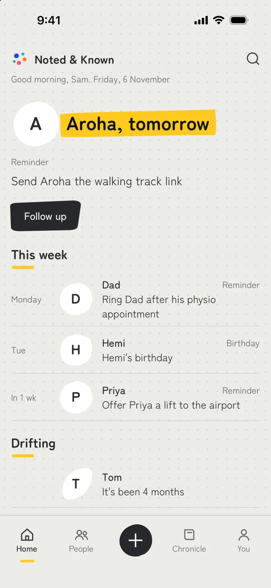
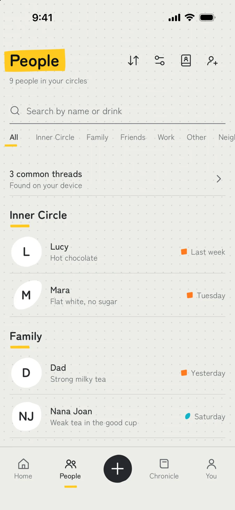
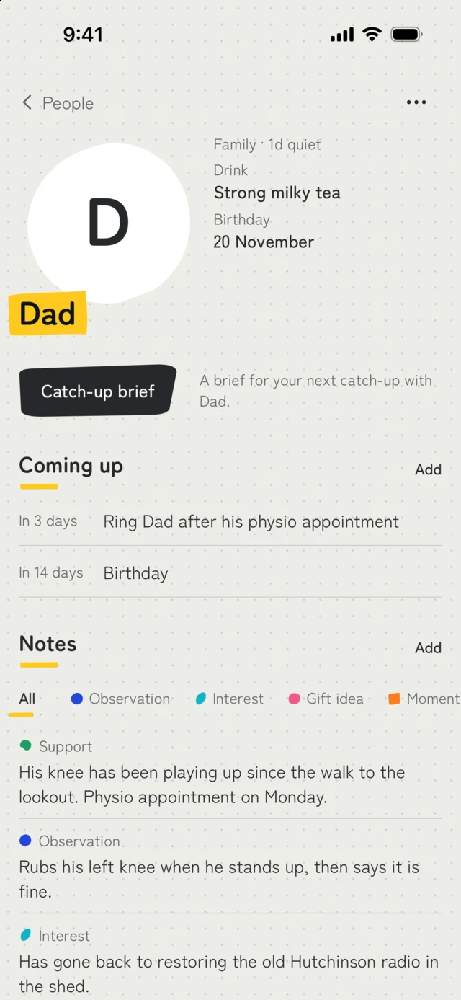
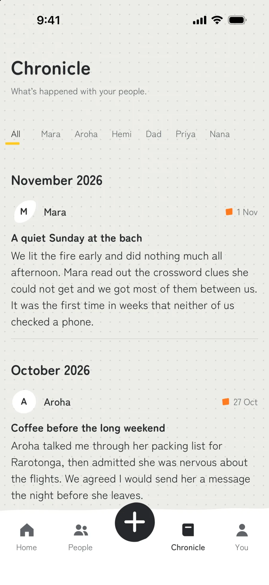
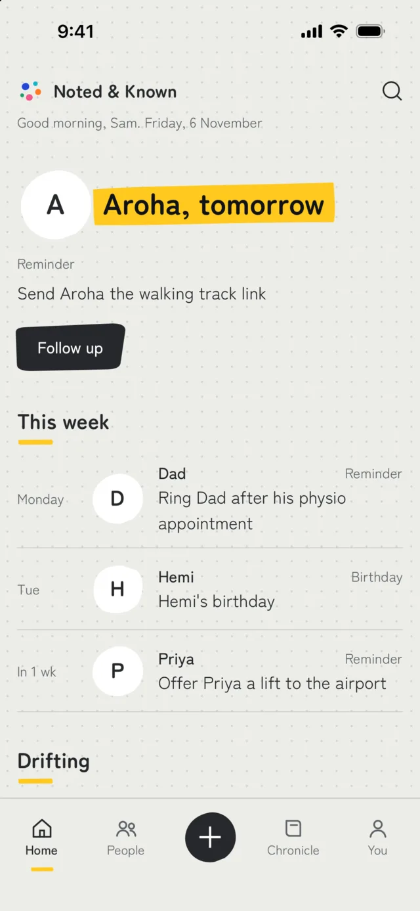
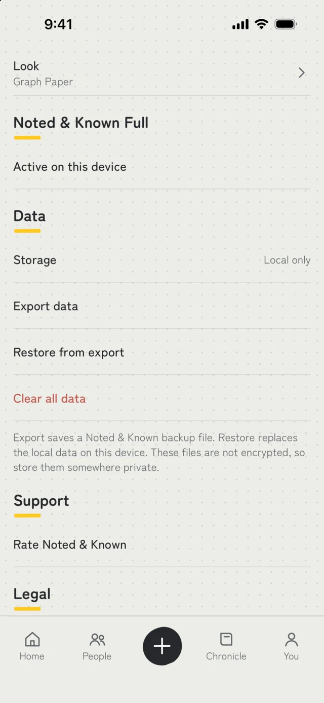

Noted & Known
It’s a notebook for the people you love, and it lives on your phone. When a friend mentions the trip she’s dreading, or your dad says his knee’s playing up, you jot it down and it’s on their page when you need it.
Free for up to eight people. There’s no account and no cloud.

You meant to remember that.
A friend says she’s nervous about a trip next month. Your dad mentions his knee’s been playing up. Someone drops a hint about a birthday present months before the day. You nod, you fully intend to remember, and a few weeks later all you’ve got is a feeling that they told you something.
Noted & Known gives each of those a place on that person’s page, so it’s waiting for you next time you see them.
Every note is one of five kinds, and each kind has its own colour.

Something you noticed.
Observation
Orders the same seat by the window whenever it’s free.
It’s the kind of detail you’d never think to write down, which is why you’ll be glad you did.
Something they love.
Interest
She keeps coming back to slow ceramic glazing.
Handy when you’re stuck for something to talk about, and even handier when it’s time to buy a present.
Something to give.
Gift idea
A linen market tote would suit her for her birthday.
Write it down the moment they say it, months before you’ve got any reason to buy it.
Something you shared.
Moment
The long lunch where we finally caught up properly.
For the days you’d like to hold onto a bit longer than your memory will let you.
Something they might need a hand with.
Support
Big presentation on Thursday, so I’ll check in beforehand.
A nudge to get in touch at just the right moment, before you’ve forgotten all about it.
Everyone gets a page.
Each person has their own page with their birthday, what’s coming up and every note you’ve written about them. You can sort people into circles like Family or Friends, and add them by hand or pick them from your contacts.

Home keeps your week in order.
Home pulls the week together. You’ll see who’s got a birthday, who needs a message, and who you haven’t spoken to in a while. There are no scores or streaks, so there’s nothing to feel bad about.
For the moments worth more than a line.
When something deserves more room, write it up in the Chronicle. Every entry is dated and sits with that person, so you can read it again in a year and remember exactly how that Sunday felt.
The You screen shows the last three months at a glance, which is handy for spotting someone you’ve lost touch with.

30 OctA quiet Sunday at the bach
25 OctCoffee before the long weekend
16 OctMoving day
Make it yours.
Graph Paper’s the look you start with, and it’s free. If you’d like a change, there are four more, each with its own type, colour and layout. Choose one to see how it looks.
Graph PaperFree
Four more with Noted & Known Full

Your notes stay on your device.
There’s no account to make and no Noted & Known cloud, and no server receives what you write. Here’s what that means in practice, including the bits where it has limits.
- You don’t need an account to use the app.
- Your people, notes and photos never leave your device.
- If the app crashes, it sends a technical crash report (a stack trace, your device model and your OS version) so we can fix the bug. It never includes your notes, names, photos or who you are.
- We also collect product analytics, which are counts grouped into ranges and tied to a random install id. They show which screens get used and never what you wrote.
- The app only reads your contacts if you choose to import, and you pick each person. Only their name, photo and birthday are copied in, once. You can add everyone by hand if you’d rather leave your address book alone.
- Reminders are local notifications scheduled by your phone, so they don’t come from a server.
And here’s what it can’t do
- A biometric or passcode lock keeps out casual snooping, and a privacy cover hides your notes in the app switcher. The lock isn’t encryption.
- You can export your data as a JSON file whenever you like. It isn’t encrypted, so keep it somewhere private.
- Restoring from an export is manual and replaces what’s on the device. It isn’t cloud sync or automatic backup.
The full detail’s in the privacy policy and the terms.

What it costs.
Free
Free for eight people.
Every kind of note, the Chronicle, reminders, export and the Graph Paper skin are all included.
Noted & Known Full
One purchase for everyone else.
You get unlimited people, your own labels, saved views and four more skins, and it’s yours to keep. There’s no subscription.
Questions people ask.
Is it a CRM?
No. It’s for remembering the people in your life, so there are no sales pipelines, follow-up quotas or networking tools in it. If you’re after a CRM, this will feel like the wrong app.
Where does my data go?
Your notes stay on your device. There’s no account and no Noted & Known cloud, so nothing you write is sent to a server of ours. The app does send crash reports and basic usage counts, as described in the privacy section above, and neither contains anything you wrote.
Can I export my data?
Yes. Export saves a JSON file of everything in the app at that moment. It isn’t an automatic backup, and the file isn’t encrypted, so keep it somewhere private.
Does it sync across devices?
Not at the moment. Noted & Known keeps everything on the device it’s installed on, so there’s no cloud sync.
Is the app lock encryption?
No. The lock helps keep casual snoopers out of the app, but it doesn’t encrypt your data. We’d rather say so plainly than let you assume.
What does it cost?
It’s free for up to eight people. A single purchase, Noted & Known Full, adds unlimited people, custom labels, saved views and four more skins. There’s no subscription.
Go on, write it down.
The next thing someone tells you is worth keeping.